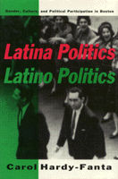

<body bgcolor="#FFFFFF" text="#000000" link="#0000FF" vlink="#CC0000" alink="#CC0000"><center><hr width="350" size="1" align="center" noshade>Political organizing by men and women in Boston's Latino community<hr width="350" size="1" align="center" noshade><p><a href="https://cdcshoppingcart.uchicago.edu/Cart/ChicagoBook.aspx?ISBN=9781566390316&&PRESS=temple" target="_top">Buy this book!</a> | <a href="https://cdcshoppingcart.uchicago.edu/Cart/Cart.aspx?PRESS=temple" target="_top">View Cart</a> | <a href="https://cdcshoppingcart.uchicago.edu/Cart/Cart.aspx?PRESS=temple" target="_top">Check Out</a></p><p></p></center><!--none//--><h1>Latina Politics, Latino Politics</h1>
<H2>Gender, Culture, and Political Participation in Boston</H2>
<h3>Carol Hardy-Fanta</h3>
<P>cloth 1-56639-031-1 $84.50, Jun 93, <FONT COLOR=#990033>Available</FONT>
<br>paper 1-56639-032-X $36.95, Jun 93, <FONT COLOR=#990033>Available</FONT>
<br>Electronic Book 1-43990-762-5 $36.95 <FONT COLOR=#990033>Available</FONT>
<BR> 272 pp
6x9
2&nbsp;figures
</P><BLOCKQUOTE><I>"[A]n important contribution to the growing literature on Latinos(as). Its focus on gender, politics, and culture should guide future research on Latino(a) community building."</I>
<br>&#151<b><I>The New England Quarterly</I></b><I></I></BLOCKQUOTE>
<p>Through an in-depth study of the Latino community in Boston, Carol hardy-Fanta addressees three key debates in American politics: how to look at the ways in which women and men envision the meaning of politics and political participation; how to understand culture and the political life of expanding immigrant populations; and how to create a more participatory America. The author's interviews with Latinos from Puerto Rico, the Dominican Republic, and Central and South America and her participation in community events in North Dorchester, Jamaica Plain, and the South End document the often ignored contribution of Latina women as candidates, political mobilizers, and community organizers. Hardy-Fanta examines critical gender differences in how politics is defined, what strategies Latina women and Latino men use to generate political participation, and how culture and gender interact in the political empowerment of the ethic communities.
<p>Hardy-Fanta challenges the notion of political apathy among Latinos and presents factors that stimulate political participation. She finds that the vision of politics promoted by Latina women&#151one based on connectedness, collectivity, community, and consiousness-raising&#151contrasts sharply with a male political concern for status, hierarchy, and personal opportunity.
<BR>&nbsp;<h2>Reviews</h2>
<p><I>"This book presents a serious challenge to the dominant American political science literature on political participation by minorities, especially Latinos. Hardy-Fanta treats and critiques that literature extremely well, using a radically different method to demonstrate that prior theories about Latino apathy are dependent on very constricted notions of political participation and even the meaning of 'what is political.' Her work integrates the literature on political participation with more recent feminist studies of gender differences in decision-making, relationships, and other kinds of social behavior. An added plus is that it is gracefully written, with a blend of theoretical discussion and down-to-earth vignettes of real people."</I>
<br>&#151<b>Deborah A. Stone</b>, David R. Pokross Professor of Law and Social Policy, Brandeis University
<BR>&nbsp;<h2>Contents</h2><P>
<p>Preface
<br>Introduction
<br>1. Discovering Latina Women in Politics: Gender, Culture, and Participatory Theory
<br>2. Making Connections
<br>3. Collectivity Versus Hierarchy
<br>4. Community and Citizenship
<br>5. Political Consciousness: Being Political, Becoming Political
<br>6. Constraints on Participation: The Impact of Structure and Sexism
<br>Conclusion
<br>Notes
<br>References
<br>Index
<br>Maps
</P><BR>&nbsp;<H2>About the Author(s)</H2>
<P><b>Carol Hardy-Fanta</b> is Director of Hispanic Research Projects in the Social and Behavioral Sciences Department at the Boston University School of Public Health.</P>
<BR><H2>Subject Categories</H2>
<p><A HREF="/tempress/latino.html" TARGET="_top">Latino/a Studies</a>
<BR><A HREF="/tempress/political.html" TARGET="_top">Political Science and Public Policy</a>
<BR><A HREF="/tempress/women.html" TARGET="_top">Women's Studies</a>
</p>
<p align="center"><a href="https://cdcshoppingcart.uchicago.edu/Cart/ChicagoBook.aspx?ISBN=9781566390316&&PRESS=temple" target="_top">Buy this book!</a> | <a href="https://cdcshoppingcart.uchicago.edu/Cart/Cart.aspx?PRESS=temple" target="_top">View Cart</a> | <a href="https://cdcshoppingcart.uchicago.edu/Cart/Cart.aspx?PRESS=temple" target="_top">Check Out</a></p><p><font face="Arial" size="1"><a href="copyright.html" onMouseOver="window.status='Web Copyright Policy';return true;" onMouseOut="window.status=''" title="Web Copyright Policy">&copy;</a> 2015 <a href="http://www.temple.edu" target="new" onMouseOver="window.status='Link to Temple University home page';return true;" onMouseOut="window.status=''" title="Link to Temple University home page">Temple University</a>. All Rights Reserved. http://www.temple.edu/tempress/titles/938_reg.html</font></p>